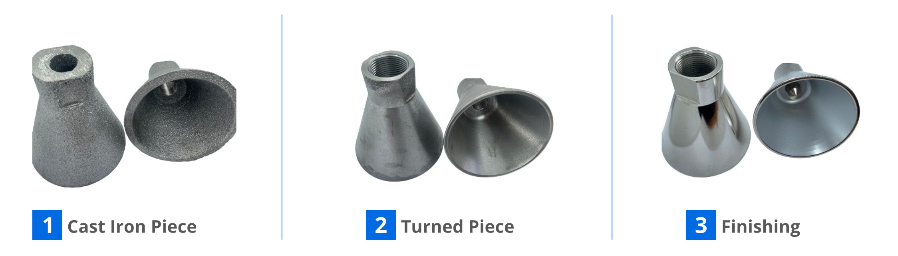

In precision engineering, transforming raw materials into high-performance components is an art. Discover the CNC turning journey, from a cast iron piece to a sleek, chrome-finished product. This process highlights meticulous craftsmanship, stringent quality control, and advanced technology, ensuring durable and precise components.
1️⃣ Cast Iron Piece: The Foundation of Strength and Durability
The journey begins with a robust cast iron piece, the cornerstone of our final product. Cast iron is chosen for its exceptional strength, durability, and excellent machinability, making it ideal for various industrial applications. This raw material is produced through a casting process where molten iron is poured into a mold, solidifying into the desired shape.
Key Benefits of Cast Iron:
Strength: Withstands high stress and pressure.
Durability: Offers long-lasting performance.
Machinability: Easily machined to precise specifications.Choosing the right cast iron is crucial as it directly impacts the quality and performance of the final product.
Our experts ensure that each cast iron piece meets stringent quality standards before moving on to the next stage.
2️⃣ Turned Piece: Precision CNC Machining
The cast iron piece is then transformed through the process of CNC turning. Computer Numerical Control (CNC) turning is a precise and automated machining process where the cast iron piece is rotated while a cutting tool shapes it to exact dimensions.
Steps in CNC Turning:
Setup: The cast iron piece is securely placed in the CNC lathe.
Programming: Specifications are programmed into the CNC machine.
Machining: The CNC machine shapes the piece with high precision.
Inspection: Each dimension is checked to ensure it meets exact specifications.This stage is critical as it defines the piece’s dimensions, tolerances, and overall geometry. The precision of CNC turning ensures that each part fits perfectly within its intended application, enhancing performance and reliability.
3️⃣ Chromed and Finished Piece: The Final Touch
After the CNC turning process, the piece undergoes surface finishing, which includes chrome plating. This step is vital for both aesthetics and functionality, providing a sleek, polished appearance and enhanced resistance to corrosion and wear.
Advantages of Chrome Plating:
Corrosion Resistance: Protects against rust and environmental damage.
Wear Resistance: Increases the durability of the part.
Aesthetic Appeal: Provides a shiny, professional finish.
The surface finishing process involves cleaning, polishing, and plating the turned piece. Each piece is meticulously inspected to ensure a flawless finish, meeting the highest standards of quality and performance.
Conclusion
From the initial cast iron piece to the final chromed and finished product, every stage in the journey of a CNC turned part is crucial. This meticulous process highlights the importance of precision engineering, quality control, and advanced machining techniques. At AGS- machining, we pride ourselves on transforming raw materials into high-performance components that meet the exact needs of our clients.Ready to experience the best in CNC machining and surface finishing? Contact us today to learn more about our services and how we can help you achieve unparalleled precision and quality in your projects.